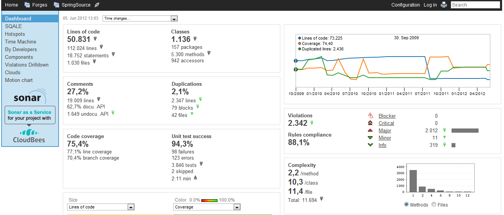
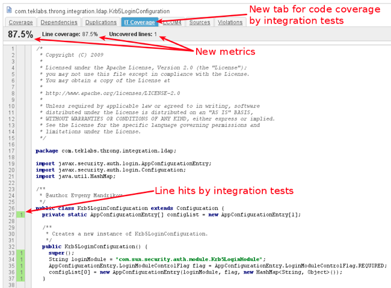
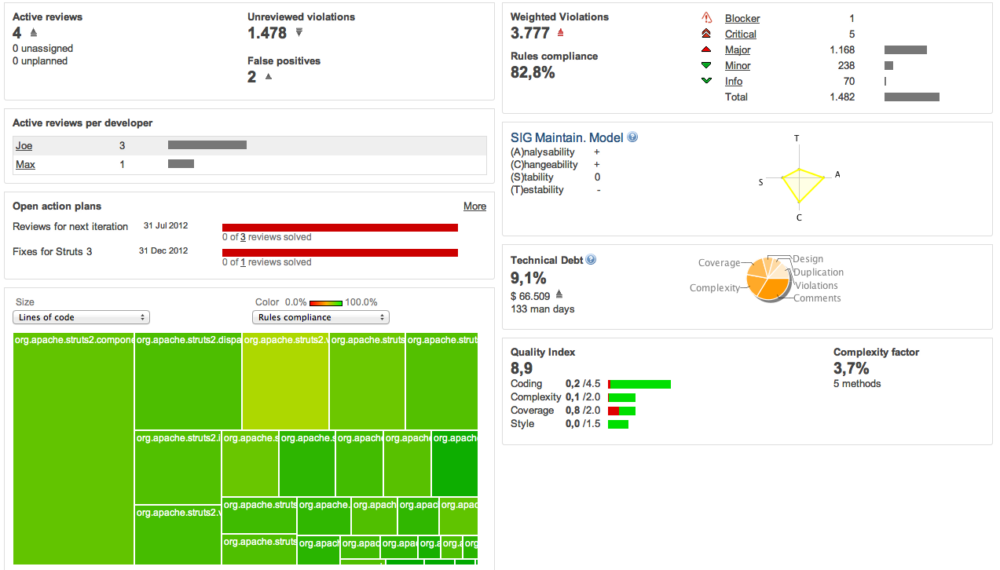
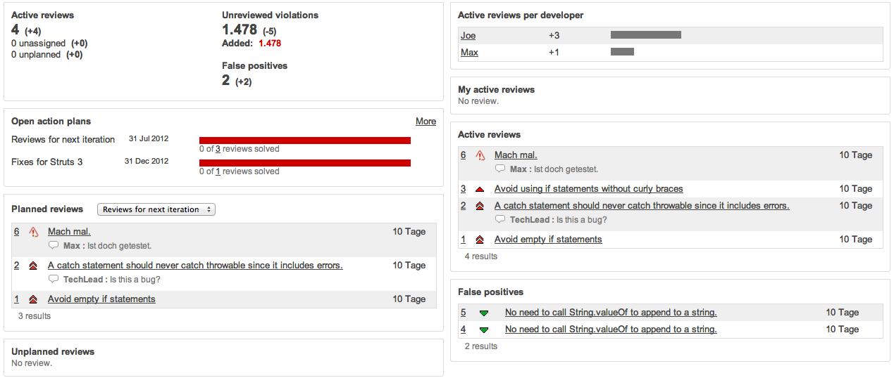

About me
- Software Engineer because of passion
- Student by day (MSc Applied Computer Science)
- Open Source Enthusiast by night
- Working for adesso AG in between
Agenda
-
Why do you listen to me?
Your, my, our problems...
-
Sonar
... to the Rescue, hopefully
-
Continuous Inspection
Know your tools
-
Demo Time!
Hands on
Why do you listen to me?
Maybe you also face problems in your projects like:
- code becomes more cluttered over time
- complexity increases, testability decreases
- hard to find all problematic places in your code base
- nearly impossible to fix all problems at once
Sonar
Sonar is a code quality management tool:
- web application running on JVM
- measures different metrics regarding code quality
- integrates different well-known tools like Findbugs, PMD and Checkstyle
- tracks metrics over time: software is not static, it continuously evolves
- easy to see trends
Sonar
If everything is set up correctly it looks like this.

Sonar - General Hints
- understand what is measured: Metric Definitions
- one sonar analysis per day is enough
- use the widgets you need
- define alerts that helps your team and ensures discipline
Sonar - General Hints
Use Jacoco for measuring code coverage of unit and integration tests separately.

Sonar - General Hints
Different dashboards for different roles.
Sonar - General Hints
And a different one for tech lead of the project:

Sonar - General Hints
Create action plans: either grouped by technical violations, by version or by domain.

Sonar - Pimp it
Upgrade your tool before you start:
- necessary plugin to be ready: scm activity
- nice to have: weighted violations, taglist, security rules, build breaker
- for high level overview: SIG maintainability model, technical debt, quality index
Continuous Inspection
To sum up: feedback loop regarding internal code quality.
To be honest:
- it's nothing new
- BUT: with Sonar you have the right tool (imho)
Continuous Inspection can be described by a workflow.
CI - Step 1

CI - Step 2

CI - Step 2
Use differential views to see what's new.


CI - Step 2
Create a review for the developer who introduced a new violation.

CI - Step 3

CI - Step 3
Use Sonar to list and filter your reviews.

CI - Step 4

Continuous Inspection
Easy, isn't it?
Try it:
- have fun by doing continuous inspection 5, 10 or 15 minutes every day
- talk about achievements in daily standup
But this only works if everyone in your team believes in the process and in the tool.
#
←
→
/